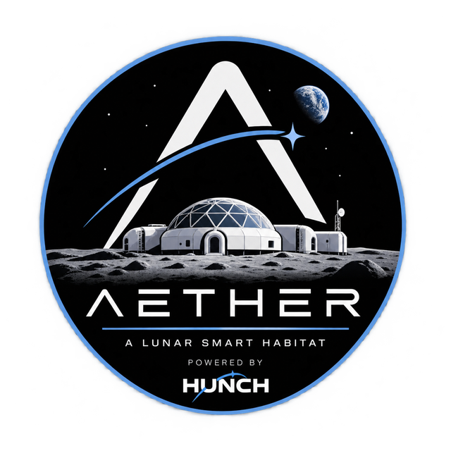

AETHER
AETHERAether
A lunar smart habitat that pays attention to its crew.
Aether is our NASA HUNCH project for 2026–27. It is a two-floor habitat under a 3D-printed regolith dome, with an AI system that reads how the crew is doing and adjusts the lighting, sound and airflow to help. We are building the architecture, the software and a 1:30 scale model with working electronics.


 Software, Biomedical Engineering and Architecture tracks
Software, Biomedical Engineering and Architecture tracks
The problem
Long missions on the Moon mean months of isolation, confinement, broken sleep cycles and constant machinery noise. All of that wears on a crew's mental health and, over time, on mission performance. Today's habitat designs keep astronauts physically safe, but they do not notice when someone is struggling.
Our idea
Make the habitat itself part of the support system. Aether collects three kinds of signals: what crew members say at a daily check-in, their biometrics (heart rate, sleep, activity), and the cabin environment (CO₂, temperature, light). A small model classifies the crew's state, and simple rules turn that into actions: warmer lighting in the evening or when stress is up, a quieter soundscape in the sanctuary, more airflow from the greenhouse, and a nudge toward exercise or social time.
The AI only recommends. It never makes a medical decision on its own.
What we are delivering
- Software — a monitoring dashboard and the adaptive intervention engine.
- Biomedical — the crew-state model, trained and tested on simulated wearable data.
- Architecture — the habitat design and a 1:30 3D-printed model on a 2 ft × 2 ft board, with lighting, sensors and a fan wired to a microcontroller.
Quick facts
- Crew of 2–4, for 30 days to 2 months at a time
- Runs unattended for 6–24 months between crews
- Location concept: lunar south pole, near Shackleton Crater
- Model scale 1:30 (1 cm on the model = 30 cm real)